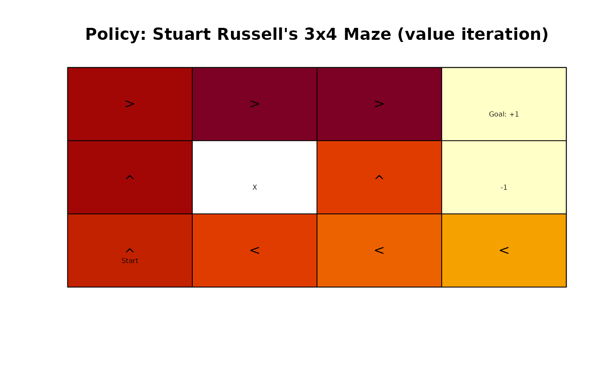

The 4x3 maze is described in Chapter 17 of the textbook "Artificial Intelligence: A Modern Approach" (AIMA).
Format
An object of class MDP.
Details
The simple maze has the following layout:
1234 Transition model:
###### .8 (action direction)
1# +# ^
2# # -# |
3#S # .1 <-|-> .1
######
We represent the maze states as a gridworld matrix with 3 rows and
4 columns. The states are labeled s(row, col) representing the position in
the matrix.
The # (state s(2,2)) in the middle of the maze is an obstruction and not reachable.
Rewards are associated with transitions. The default reward (penalty) is -0.04.
The start state marked with S is s(3,1).
Transitioning to + (state s(1,4)) gives a reward of +1.0,
transitioning to - (state s_(2,4))
has a reward of -1.0. Both these states are absorbing
(i.e., terminal) states.
Actions are movements (up, right, down, left). The actions are
unreliable with a .8 chance
to move in the correct direction and a 0.1 chance to instead to move in a
perpendicular direction leading to a stochastic transition model.
Note that the problem has reachable terminal states which leads to a proper policy
(that is guaranteed to reach a terminal state). This means that the solution also
converges without discounting (discount = 1).
References
Russell,9 S. J. and Norvig, P. (2020). Artificial Intelligence: A modern approach. 4rd ed.
See also
Other MDP_examples:
Cliff_walking,
DynaMaze,
MDP(),
Windy_gridworld
Other gridworld:
Cliff_walking,
DynaMaze,
Windy_gridworld,
gridworld
Examples
# The problem can be loaded using data(Maze).
# Here is the complete problem definition:
gw <- gridworld_init(dim = c(3, 4), unreachable_states = c("s(2,2)"))
gridworld_matrix(gw)
#> [,1] [,2] [,3] [,4]
#> [1,] "s(1,1)" "s(1,2)" "s(1,3)" "s(1,4)"
#> [2,] "s(2,1)" NA "s(2,3)" "s(2,4)"
#> [3,] "s(3,1)" "s(3,2)" "s(3,3)" "s(3,4)"
# the transition function is stochastic so we cannot use the standard
# gridworld gw$transition_prob() function
T <- function(action, start.state, end.state) {
action <- match.arg(action, choices = gw$actions)
# absorbing states
if (start.state %in% c('s(1,4)', 's(2,4)')) {
if (start.state == end.state) return(1)
else return(0)
}
# actions are stochastic so we cannot use gw$trans_prob
if(action %in% c("up", "down")) error_direction <- c("right", "left")
else error_direction <- c("up", "down")
rc <- gridworld_s2rc(start.state)
delta <- list(up = c(-1, 0),
down = c(+1, 0),
right = c(0, +1),
left = c(0, -1))
P <- matrix(0, nrow = 3, ncol = 4)
add_prob <- function(P, rc, a, value) {
new_rc <- rc + delta[[a]]
if (!(gridworld_rc2s(new_rc) %in% gw$states))
new_rc <- rc
P[new_rc[1], new_rc[2]] <- P[new_rc[1], new_rc[2]] + value
P
}
P <- add_prob(P, rc, action, .8)
P <- add_prob(P, rc, error_direction[1], .1)
P <- add_prob(P, rc, error_direction[2], .1)
P[rbind(gridworld_s2rc(end.state))]
}
T("up", "s(3,1)", "s(2,1)")
#> [1] 0.8
R <- rbind(
R_(end.state = NA, value = -0.04),
R_(end.state = 's(2,4)', value = -1),
R_(end.state = 's(1,4)', value = +1),
R_(start.state = 's(2,4)', value = 0),
R_(start.state = 's(1,4)', value = 0)
)
Maze <- MDP(
name = "Stuart Russell's 3x4 Maze",
discount = 1,
horizon = Inf,
states = gw$states,
actions = gw$actions,
start = "s(3,1)",
transition_prob = T,
reward = R,
info = list(gridworld_dim = c(3, 4),
gridworld_labels = list(
"s(3,1)" = "Start",
"s(2,4)" = "-1",
"s(1,4)" = "Goal: +1"
)
)
)
Maze
#> MDP, list - Stuart Russell's 3x4 Maze
#> Discount factor: 1
#> Horizon: Inf epochs
#> Size: 11 states / 4 actions
#> Start: s(3,1)
#>
#> List components: ‘name’, ‘discount’, ‘horizon’, ‘states’, ‘actions’,
#> ‘transition_prob’, ‘reward’, ‘info’, ‘start’
str(Maze)
#> List of 9
#> $ name : chr "Stuart Russell's 3x4 Maze"
#> $ discount : num 1
#> $ horizon : num Inf
#> $ states : chr [1:11] "s(1,1)" "s(2,1)" "s(3,1)" "s(1,2)" ...
#> $ actions : chr [1:4] "up" "right" "down" "left"
#> $ transition_prob:function (action, start.state, end.state)
#> $ reward :'data.frame': 5 obs. of 4 variables:
#> ..$ action : Factor w/ 4 levels "up","right","down",..: NA NA NA NA NA
#> ..$ start.state: Factor w/ 11 levels "s(1,1)","s(2,1)",..: NA NA NA 10 9
#> ..$ end.state : Factor w/ 11 levels "s(1,1)","s(2,1)",..: NA 10 9 NA NA
#> ..$ value : num [1:5] -0.04 -1 1 0 0
#> $ info :List of 2
#> ..$ gridworld_dim : num [1:2] 3 4
#> ..$ gridworld_labels:List of 3
#> .. ..$ s(3,1): chr "Start"
#> .. ..$ s(2,4): chr "-1"
#> .. ..$ s(1,4): chr "Goal: +1"
#> $ start : chr "s(3,1)"
#> - attr(*, "class")= chr [1:2] "MDP" "list"
gridworld_matrix(Maze)
#> [,1] [,2] [,3] [,4]
#> [1,] "s(1,1)" "s(1,2)" "s(1,3)" "s(1,4)"
#> [2,] "s(2,1)" NA "s(2,3)" "s(2,4)"
#> [3,] "s(3,1)" "s(3,2)" "s(3,3)" "s(3,4)"
gridworld_matrix(Maze, what = "labels")
#> [,1] [,2] [,3] [,4]
#> [1,] "" "" "" "Goal: +1"
#> [2,] "" "X" "" "-1"
#> [3,] "Start" "" "" ""
# find absorbing (terminal) states
which(absorbing_states(Maze))
#> s(1,4) s(2,4)
#> 9 10
maze_solved <- solve_MDP(Maze)
policy(maze_solved)
#> state U action
#> 1 s(1,1) 0.8513071 right
#> 2 s(2,1) 0.8007595 up
#> 3 s(3,1) 0.7409561 up
#> 4 s(1,2) 0.9077989 right
#> 5 s(3,2) 0.6842791 left
#> 6 s(1,3) 0.9578061 right
#> 7 s(2,3) 0.7002680 up
#> 8 s(3,3) 0.6321148 left
#> 9 s(1,4) 0.0000000 right
#> 10 s(2,4) 0.0000000 down
#> 11 s(3,4) 0.4045407 left
gridworld_matrix(maze_solved, what = "values")
#> [,1] [,2] [,3] [,4]
#> [1,] 0.8513071 0.9077989 0.9578061 0.0000000
#> [2,] 0.8007595 NA 0.7002680 0.0000000
#> [3,] 0.7409561 0.6842791 0.6321148 0.4045407
gridworld_matrix(maze_solved, what = "actions")
#> [,1] [,2] [,3] [,4]
#> [1,] "right" "right" "right" "right"
#> [2,] "up" NA "up" "down"
#> [3,] "up" "left" "left" "left"
gridworld_plot_policy(maze_solved)
